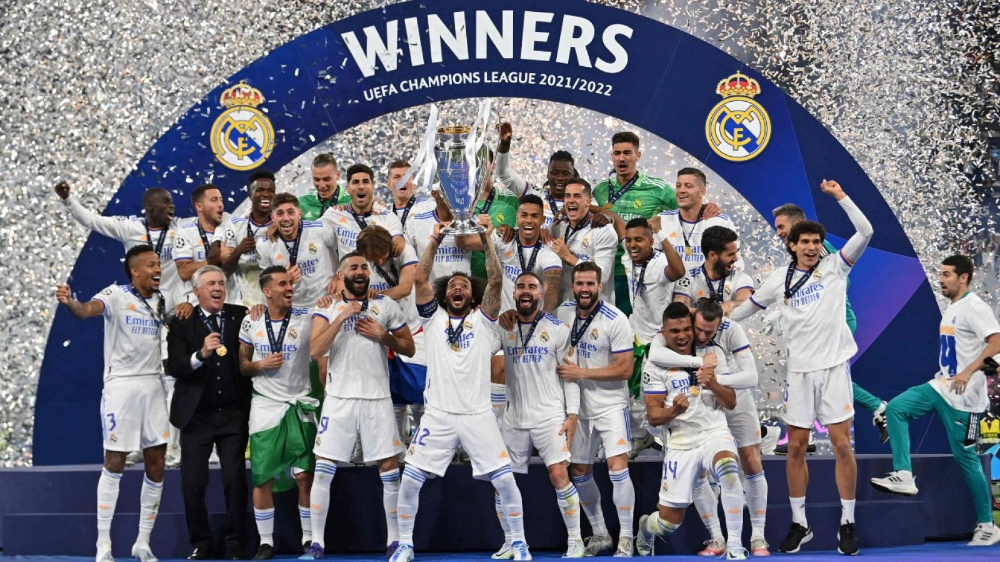
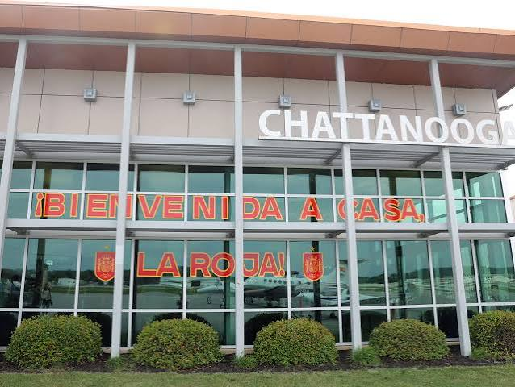
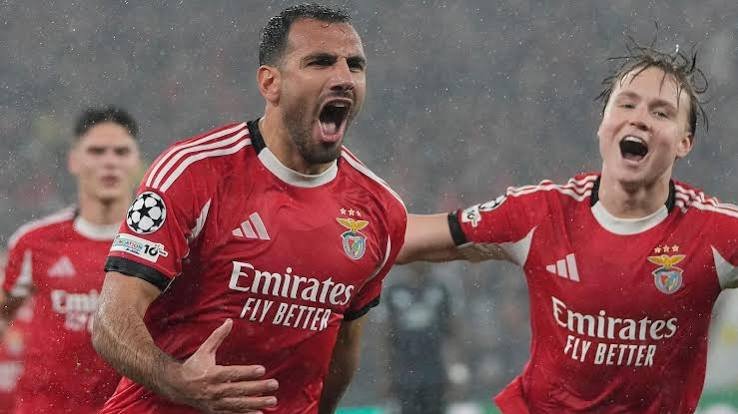
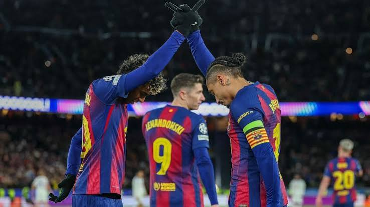
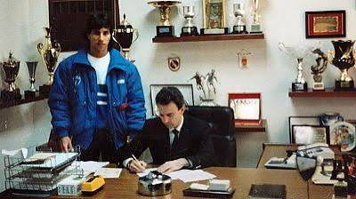

La RFEF elige Chattanooga como sede de la selección española para la primera fase del Mundial de fútbol
Mundial de EEUU, México y Canadá 2026

El Benfica y la 'conjura' de Lisboa sacan a un paupérrimo Real Madrid del 'top 8' de la Champions

El Barça despierta a tiempo: remonta al Copenhague y es quinto en la primera fase de la Champions

04:45 minConexión Vintage 'Paulo Roberto Maravilla'
Conexión Vintage 'Paulo Roberto Maravilla' 23:50h en Teledeporte y RTVE Play